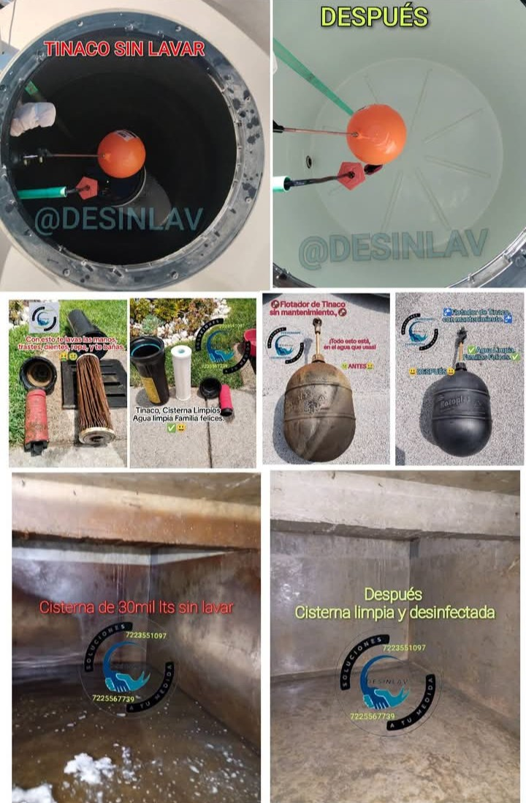
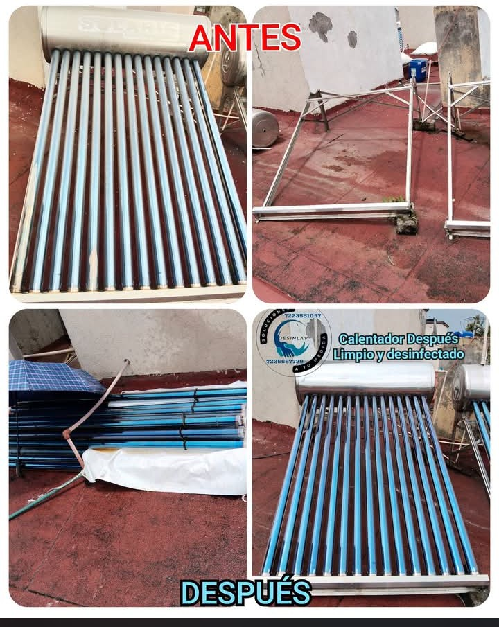
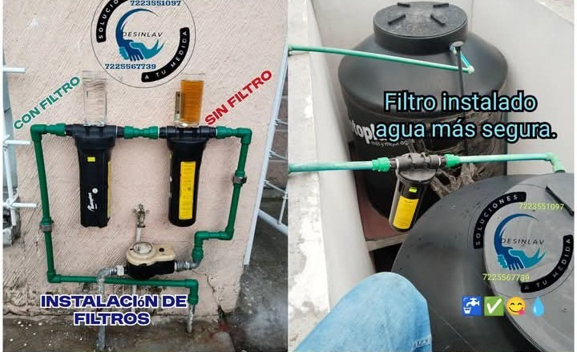

Agua limpia y pura para tu hogar con DESINLAV
Especialistas en limpieza y desinfección profunda de tinacos, cisternas y calentadores solares. Protegemos tu salud con productos no alcalinos de grado alimenticio.
Grado Alimenticio
Sin químicos dañinos
Cuida la Capa
Protege capa antibacterial
Sin Rayaduras
Cuidado para tubos solares
Nuestro compromiso con la calidad de tu agua
Nuestro servicio es un trabajo profesional y garantizado con productos especiales para depósitos de agua no alcalinos de grado alimenticio. Cuidamos cada detalle técnico de tus instalaciones:
Capa Antibacterial Intacta
No dañamos la capa antibacterial interior de sus tinacos ni cisternas. Empleamos cepillos de cerda suave y limpiadores no agresivos.
Protección a Tubos Solares
No rayamos ni maltratamos los tubos de borosilicato de los calentadores solares durante la extracción y lavado a presión.
Equipamiento Técnico
Contamos con bombas sumergibles de alto flujo, aspiradoras de lodos y agua, y equipos de agua a presión para una limpieza exhaustiva.
¿Cómo realizamos nuestro trabajo?
Transparencia y rigurosidad técnica en cada paso del proceso de lavado.
Tinaco y Cisterna
6 Pasos para desinfección total
-
1
Drenado: Se drena el tinaco o cisterna rápidamente utilizando bomba de agua especializada.
-
2
Aspirado inicial: Se aspira toda la suciedad, sedimentos y lodos acumulados en el fondo.
-
3
Desinfección: Se aplica el producto especial de lavado y desinfección de grado alimenticio.
-
4
Enjuague: Se enjuaga profundamente el tinaco con agua limpia a presión.
-
5
Aspirado final: Se vuelve a aspirar completamente el agua de enjuague para no dejar residuos.
-
6
Limpieza de accesorios: Por último se lava detalladamente la tapa y el flotador del mismo.
Calentador Solar
4 Pasos de mantenimiento profundo
-
1
Drenado: Se drena completamente el tanque del sistema solar.
-
2
Lavado de tubos: Se quitan los tubos uno por uno y se lavan cuidadosamente con nuestro producto y agua a presión.
-
3
Lavado de termotanque: Se quita el termotanque y, al igual que los tubos, se desinfecta internamente y se lava con agua a presión.
-
4
Reensamblado completo: Se vuelve a colocar todo el equipo de forma segura comprobando que no existan fugas.
Nuestros Trabajos Realizados
Evidencia fotográfica del antes y después en tinacos, cisternas, flotadores y calentadores solares.
Tinaco, Cisterna y Flotador
Antes y Después
Remoción completa de capas de sedimento, lodo y sarro en depósitos y flotadores.
Calentador Solar
Antes y Después
Desmontaje y lavado profundo tubo por tubo y termotanque para recuperar eficiencia.
Tarifas del Servicio
Valores transparentes sin cobros ocultos para todo Valle de Toluca.
Lavado de Tinaco / Cisterna
Dependiendo del nivel de contaminación y dimensiones del depósito.
- Drenado con bomba potente
- Aspirado profundo de sedimentos
- Sanitizante grado alimenticio
- Lavado de tapa y flotador
Cotización Presencial
En caso de requerir únicamente una inspección previa.
- Revisión de estado de tinaco/cisterna
- Diagnóstico de calentador solar
- Asesoría de instalación de filtro
Filtros de Agua
Agua más segura para toda la casa.

Servicio a domicilio rápido en tu municipio
Hacemos servicio garantizado en Toluca, Metepec, Zinacantepec, Lerma y áreas alrededores. Contáctanos para consultar disponibilidad inmediata en tu colonia o fraccionamiento.
¿Tienes dudas o necesitas agendar?
Respuestas inmediatas a través de nuestro canal directo de atención al cliente.
Mantén la higiene del agua en tu hogar
Contáctanos hoy mismo por WhatsApp o visita nuestro perfil oficial en Facebook para consultar promociones activas.